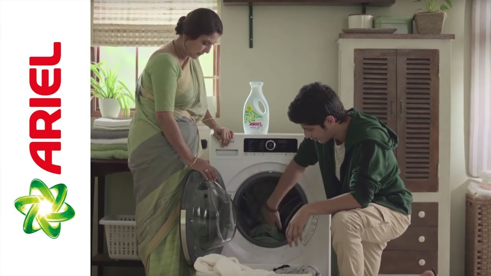

Have you heard of a brand that didn't really want to sell to half of its audience? It had the product. It had the chance. And it still chose the smaller half, because it felt that was the right thing to do, not just the profitable one.
It's 2005. Two-wheelers in India are a boys' club. The bike belongs to the brother. The scooter belongs to the father. The girl gets the back seat, sitting sideways, holding on.
A scooter company sits in a room with a bunch of college girls and asks them about fun. One of them says the thing that becomes the brief: boys have more fun because boys have wheels.
Hero Honda Pleasure, 2006. Film frame · FCB Ulka
Now, a sensible marketer sells that scooter to everyone. Bigger market, bigger numbers, bigger bonus. Hero Honda did something stranger. It built the whole story around her: a scooter for her, ads with Priyanka Chopra riding it, and showrooms run by women so she wouldn't have to explain herself to a salesman who'd rather talk to her brother. The line was a question: WHY SHOULD BOYS HAVE ALL THE FUN?
(So it was charity?)
No. That's the best part. It sold. Roughly 92,000 scooters and a 7.5% market share in the first year, by the company's own numbers.
That is what this book is about. Not "women empowerment" the hashtag. The real thing, done by brands, sometimes for the right reasons, sometimes for the quarter, and sometimes so well that the government copied it years later.
Some brands tried. Some made a difference. A few made a film, collected an award and went home. I'll tell you which was which, show you the receipts, and tell you the awkward parts nobody puts in the case study. Then I'll show you how it's done.
Grab a chai. This one's long, on purpose.
Before we start
Who this is for
Foundersin period care, intimate health, maternity, beauty and wellness
Brand headswith a Women's Day brief on the desk
CEOswho've been asked to "do something"
HR leaderswho keep hearing their leave policy is a brand story now
One rule. Every claim of impact here carries a grade, because in this business everyone has a case study and almost nobody has proof.
A
Someone independent or official said it.
B
The brand or its agency said it, usually in an award entry.
C
The press talked about it. Nobody measured anything.
Most of what you'll read is grade B. Don't throw it out. Just remember who's holding the pen.
1
Part one
The awkward truth
Let's get the uncomfortable numbers out of the way, because every brand in this book walked into them.
131 of 145India's rank on the WEF Global Gender Gap Index, 2026
71%of adolescent girls don't know about periods until their first one (Whisper research, grade B)
8the age some girls in India now start their periods (Whisper, 2025, grade B)
12.3bndisposable pads into India's landfills every year (to verify)
We sent the girls to school. We didn't let them go to work.
Women in India are near parity in school, far behind at work
Parity score by dimension, 100% = full parity. WEF Global Gender Gap Report 2026.
Full parity
96.6%
95.6%
41.2%
24.5%
Women are nearly at par in school. At work, the parity score is 41.2%. NFHS-6 says the share of women with ten or more years of schooling went from 41.0% to 46.4%. Labour-force parity sits at 44.1%. Education did not turn into earnings. If you sell anything to women, that gap is your market, your media plan and your moral problem, all at once.
We still can't say the word.
Sit with Whisper's two numbers for a second: an eight-year-old, a stain, and nobody told her. It took the Supreme Court, in January 2026, to say that menstrual health is part of the right to life. It ordered free sanitary napkins and separate toilets in schools, and said boys must be taught about periods too. A category where the highest court in the country has to give you permission to talk.
And the pad itself is a problem.
For years brand decks said "under 20% of Indian women use sanitary pads". NFHS-6 says 79.2% of women aged 15 to 24 use a "hygienic method". Both can be true, because "hygienic method" includes cloth and locally made napkins. Pick your definition and say it out loud. Meanwhile an estimated 12.3 billion disposable napkins, about 113,000 tonnes, go into India's landfills every year. Access and waste are now the same conversation.
The buyer isn't the user, and the user doesn't ask.
A mother picks her daughter's first pad. A husband picks it up from the chemist. A doctor can't endorse it, because Indian medical rules don't allow it. Every voice that matters in this category is one you have to earn, not buy.
(So why would any brand go near this?)
Because the ones that did became the category. Here's how.
2
Part two
The tales
Eleven stories. Each ends the same way: the receipt, what the evidence actually says, and the lesson, what you'd steal for your own brand.
In a lot of Indian homes, a girl on her period is told not to touch the pickle. It'll spoil, apparently. Also stay out of the kitchen. And the temple. And sit in that corner, please.
Whisper looked at that pickle jar and saw a brief. Touch the Pickle didn't sell softness or wings or dryness. It took the most ridiculous rule in the house and dared you to break it. It won the Glass Lion Grand Prix at Cannes, the award created for work that tackles gender inequality.
Here's the part most people miss. The film wasn't the work. The work started in 1995, when Whisper began going into schools to explain periods to girls who'd never been told. Thirty years of that. Then a push with UNESCO for a period-education module in the curriculum. Then, in 2025, Project Early Periods: the discovery that girls in India are starting as young as eight, and products redesigned for smaller bodies.
B
The receipt
Whisper says it has educated 61 million girls, grown the business 9% over three years, educated 8.2 million more through Project Early Periods and kept 1.6 million in school. All from Whisper's own award entries.
The lesson
In a taboo category, education is the marketing. The brand that explains it first is the brand she trusts for the next forty years.
P&G asked Indian men a simple question in 2015: is housework a woman's job? 79% said yes.
Now, Ariel's buyer is a woman. Every rule in the FMCG book says you talk to her. Ariel talked to him instead. Is laundry only a woman's job?
The one that broke people was Dads. An old father visits his married daughter and watches her run the house, the office, the child and the laundry while her husband watches TV. He writes her a letter. He's sorry. He never shared the load either, and she learned it from him. Then he goes home and does the laundry with his wife.

Sons #ShareTheLoad (2019). Film frame · BBDO India
Ariel kept going for more than eight years: Sons asked whether we teach our boys what we teach our girls; Equal Sleep showed women sleeping less; See Equal replaced the Ariel name on packs with the 100 most common Indian male names. The brand literally handed the pack to the man.
B
The receipt · B for outcomes, A for awards
1.57 million men pledged to share the load in the first phase. A D&AD White Pencil for sustained impact. No independent study shows the pledges changed who actually does the chores. Pledges are cheap, bhai.
The lesson
Talk to the person who has to change, not the person who's already convinced. And stay long enough for it to matter.
In June 2019 Zomato gave 26 weeks of paid parental leave to every parent: mothers, fathers, adoptive parents, non-birthing parents, plus $1,000 per child. In August 2020 it gave up to 10 days of paid period leave a year to women and transgender employees.
Zomato wasn't first, and we should say it. Bihar gave its women employees period leave in 1992. Two Mumbai firms, Culture Machine and Gozoop, did it in 2017. Ikea had gender-neutral parental leave in India two years before Zomato. But nobody had made it national news.
What made it land was the last paragraph of the CEO's memo. He spoke to the men. That one paragraph did more educating than a thousand Women's Day posts.
Then the awkward bits. The policy split Indian women: some said it would get them hired less. And the 2019 parental leave didn't reach Zomato's delivery partners, the people on the bikes in the rain. Karnataka made one day a month mandatory in 2025, covering private employers. The Supreme Court in 2026 called voluntary policies "excellent" but refused to make leave national, warning it could hurt women's hiring.
A
The receipt · for the policy and the debate
Swiggy, BYJU's and others followed. The states followed. Causation, nobody can prove.
The lesson
A policy is a campaign nobody can accuse of femvertising. And the line you write for the men in the room may matter more than the policy itself.
April 1974. A young engineering graduate in Bangalore sees a Telco job advert. It ends with a line that was perfectly normal then: lady candidates need not apply.
She writes a postcard. Not to HR. To JRD Tata. She asks how a group that built the country's industry could shut out half its people.
She gets an interview. She gets the job. Sudha Murty becomes the first woman engineer on Telco's shop floor.
And this wasn't Tata's first move. Tata Steel introduced maternity benefits in 1928. By the company's own account, the law caught up years later. In 2002, the Tejaswini programme moved women into jobs that had been reserved for men.
Now the awkward part, and Tata says it itself. In 2004 there were about 2,100 women among 43,000 Tata Steel employees. Under five percent. Tata led on policy. It didn't lead on headcount.
B
The receipt
Company histories and press. Say "among the earliest corporate measures for women in India", not "the first". Bombay's maternity law came in 1929, a year after Tata's scheme, so check the dates before you put "first" on a page.
The lesson
The only heritage you can borrow credibility from is the one written into policy. People still tell the postcard story. Nobody remembers a Women's Day post from 1974.
A girl in the back of a taxi tells you about her mother. Her mother took her in when no one else would. Her mother fought to get her into school. Her mother is Gauri Sawant, a transgender activist from Mumbai who adopted the daughter of a sex worker.
This is a cough-and-cold brand. It had been selling "care" for decades, and here it was quietly redefining who the carer is.
B
The receipt
Reported 8% higher brand recall and 23% higher sales. It gave Sawant a national platform for her plan to build a home for the children of sex workers, and her life later became the series Taali.
The lesson
A brand built on care earned the right to redefine the carer. When the brave idea is the brand's oldest promise told truthfully, it doesn't feel borrowed.
A bride gets ready. A mother, not a girl. Her little daughter is at the wedding. It's her second marriage, and the film treats that as the most normal thing in the world.
In 2013, from a jewellery brand that lives off weddings, that was not normal. Trade press called it perhaps the first Indian ad to show a woman remarrying.
C
The receipt
Lots of conversation, no outcome data. Its value is precedent: after this, remarriage became something mainstream advertising could touch.
The lesson
The brand most dependent on a tradition is the one with the most power to question it. Nobody expected the wedding jeweller to say it, so everyone heard it.
You heard the story at the start. Here's what we can actually prove.
~92kscooters sold in year one
7.5%market share in year one
21-22women-run "for her" showrooms
1 questionWhy should boys have all the fun?
B
The receipt
Company and case-note sources. Later films kept the tone light while poking at curfews for girls and the "woman driver" jibe. Nobody measured what it did for women's mobility, so the honest claim is "helped normalise", not "caused".
The lesson
The showroom did as much work as the film. A product built for her, sold in a space run by women, is what made the question believable.
You can't outspend Whisper. So the challengers changed the thing itself.
Saathi made pads from bamboo and banana fibre that break down, and worked with NGOs to get them into rural homes. Unipads, with VMLY&R Commerce and Tea Promoters India, made Tea Cycle: a pack of 28 tea sachets matched to the menstrual cycle, sold with school and village sessions run by Unipads' local women entrepreneurs. It won an education award at The Drum Awards for Social Purpose. Menstrupedia drew a comic that explains periods to a girl before her first one arrives, and won a Laadli Media Award in 2016.
C
The receipt
Recognition and reach, very little measured outcome.
The lesson
A small brand wins this category by changing the material, the format or the moment of education. Out-design the leader; don't try to out-shout it.
Nike's big India film put Indian sportswomen from across sports on screen, to a soundtrack you couldn't sit still for. 2.8 million views in a week.
Then came The Other Women, a spin-off made by someone else, about the women who play sport in fields, not stadiums, and can't afford the shoes. Ouch. But fair.
Titan Raga took on a different lie: that a woman who chooses her career is a worse mother. Years later, Titan Kanya ran a literacy campaign for mothers in 2025, a rare case of the message getting a programme behind it.
C
The receipt
Views and debate. No outcomes published.
The lesson
Aspiration is powerful, and narrow. If your product is priced for the few, someone will ask about the many. Have your answer ready.
My Choice got called out for turning women's freedom into a fight with men. Biba flipped the roles in a dowry conversation and got called reverse sexism. All Out's film had a grandfather defending his daughter-in-law for disciplining his grandson, which people loved, while the women in the same frame were serving dinner and not eating, which nobody in the film seemed to notice. People noticed.
C
The receipt
The criticism is the evidence.
The lesson
Test the idea with the women it is about, not only with your agency. A good intention shot in the wrong frame becomes the headline.
Time to put my own work on the table, same rules as everyone else.
September 2022. The pandemic is barely over, and women have spent two years looking after everyone except themselves. Work from the dining table. School from the same table. Meals, medicines, in-laws. As FITTR's founder Jitendra Chouksey put it at the launch, women tend to put their health on the back burner to take care of family and work.
The numbers backed it up. NFHS showed the share of overweight women in India rising from 20.6% to 24% between the last two surveys, and overweight children from 2.1% to 3.4%.
So for the 17th Transformation Challenge we didn't put a trainer or a celebrity at the centre. We put Shilpa Mehta there. She had won TC15. She is a young mother, and she started as a homemaker without a job. She went on to become a FITTR health and wellness coach. Her story was the brief: the barrier isn't the gym, it's the belief that your health comes last.
The film said one more thing, quietly. Children copy what their mothers do, not what their mothers say. A mother who looks after her own health is setting the example for the next generation. TC17 even added a mother-and-child category, so they could do it together.
The line was #BREAKYOURBARRIERS: the mental, psychological and physical ones, many of them put there by other people.
In my words
I introduced separate categories exclusive to different segments. The Transformation Challenge has been a place everyone competes with their own past self and not with others; the best transformation wins not the most shredded man or woman, we felt the need to recognise the advantages or limitations of gender, age and physical condition. That idea helped bring in different categories to experiment and saw substantial boost in participation and engagement.
Individual MaleStandard entry for men
Individual FemaleStandard entry for women
SeniorFor older adults, aged 50+
Specially AbledFor participants with disabilities
PartnerPairs competing together, in select editions
Group / Family3 to 4 people: family with children and senior parents, or friends
FITTR CoachExclusive for FITTR's health and wellness coaches
Employee & PartnerFor FITTR employees, vendors and partners, to kill any thought of bias
What the record says: FITTR launched TC17 and the #BreakYourBarriers campaign across digital platforms on 7 September 2022. Jitendra Chouksey said at launch that FITTR had helped transform more than 1,20,000 women by making fitness possible at home.
C
The receipt · and I'll own it
I don't have a measured impact. I moved on from the brand a couple of months after launch, before anyone could measure what it did. So by the standard I've held every other brand to in this book, this one gets a C too.
The lesson
Decide how you'll measure before launch, and write it down where the next person will find it. Teams change. The measurement plan shouldn't leave with them.
Whisper school programmeSince 1995 · curriculum push with UNESCO
→
Supreme Court, January 2026Free pads and toilets in schools · boys must be taught too
A company moved, and years later the law or the court followed. Did the brands cause the laws? Nobody can prove that, and I won't pretend to. But they made the idea look workable before anyone had to vote on it. (Not every thread starts private: Bihar gave women state employees period leave in 1992.)
Habit 3 · They spoke to the men
#ShareTheLoad and Zomato's memo, the two ideas that travelled furthest, were both addressed to men. In 2026 the Supreme Court said the same about schools: boys must be taught about periods too.
The bill nobody likes to read
Here's the awkward part, and I'm not going to soften it.
A benefit, not a right
A woman gets period leave because her employer is progressive. Change the employer, and she loses it. Zomato's delivery partners didn't get the parental leave its office staff got.
For the few, not the many
Voluntary leave reaches a small slice of India's working women. Even Karnataka's mandate covers only the organised sector. The domestic worker, the farm labourer and the vegetable seller are outside all of it.
Something you buy
A 2023 LSE study of Women's Day ads found Indian "empowerment" advertising keeps tying freedom to shopping, and keeps speaking to women of one class, one caste and one religion.
Self-reported
Pledges, views, recall and sales lift are not a woman's day changed. Almost every number in Part 2 came from the brand that made the ad.
(So brands are the villains now?)
No. Brands are good at the first move and bad at the last mile. They can break a taboo, fund a pilot and prove a rule can work. They can't reach the informal worker, guarantee a right or answer to voters. The best stories in this book are the ones where a private move was picked up by a public one. Remember that when you write your brief.
4
Part four
How it's done
You've heard the stories. Now let me teach you how to build one yourself, especially in women's health, where taboo, trust and price all meet at the same shelf.
In this category a brand gets built in a fixed order. Skip a step and your money leaks out of the bottom of the funnel.
Permission
Education
Trial
Habit
Advocacy
01
Earn permission before you ask for attention.Name the thing. Touch the Pickle didn't hide behind "those days"; it put the actual rule on screen. Say it in her language, and her mother's. Regional-language work is where the next big gains are.
02
Be there at the first need, not the first purchase.If periods can start at eight, your real launch date is a classroom, not a shelf. Whisper has been in schools since 1995. That's a thirty-year head start on trust.
03
Borrow trust honestly.The voices that matter are the mother, the teacher, the gynaecologist, the ASHA worker and the best friend. Doctors in India can't endorse you, so fund what they'd publish anyway: education, screening, research. The second a voice looks paid, it turns against you. (I wrote a whole piece on this: Sifaarish.)
04
Take the fear out of switching.For a lot of buyers, the barrier to a new period product isn't the price. It's the fear of a stain at school or at work. Lead with fit, leak protection and how it feels. Make the first try small, private and easy to return. Help her pick the right size and flow before she pays.
05
Price per cycle, not per pack.Show the cost over a month, a year and two years, including what she'd otherwise throw away. Let comfort make the first sale, and let sustainability be the reason she tells her friend.
06
Bring the house in.Fathers and husbands often do the buying. Brothers and sons carry the stigma. Ariel and Zomato both talked to the men. A period brand that only talks to women is ignoring half the purchase decision.
07
Practise before you preach.Period leave, flexible work and a women-led team aren't HR footnotes in this category. They're the proof your campaign isn't femvertising.
08
Pick one social metric before launch, and publish it.Not views, not pledges. School days not missed. Girls who knew before their first period. Women who switched and stayed. Publish it when it falls short too. Remember my FITTR confession: plan the measurement before you launch, not after you leave.
09
Go past the metro.The women left out of almost every story here work in fields, homes and markets. Price points, chemist and kirana shelves, schools, NGOs and local languages reach them. A national film doesn't.
10
Stay for a decade.Whisper has been at it since 1995. Ariel ran #ShareTheLoad for more than eight years. One campaign is a statement. Ten years is a brand.
Before you brief the agency
What norm are we challenging, in one sentence?
What will exist after the film ends: a product, a programme, a policy or a partnership?
Who has to change their behaviour, and are we talking to them?
Whose trust are we borrowing, and would they still vouch for us if they knew everything?
What is our one social metric, and who will measure it independently?
Have we tested this with the women it is about, outside the metro?
Will we still be doing this in five years?
If you can't answer all seven, you're not ready to make the ad. You're ready to make a Women's Day post. And now you know the difference.
5
Part five
Look before you research
Most teams pay for a study before they have read what is already free. Here is where I look first, and what I look for.
Here is an awkward one. Almost every number in this book came from a free, public source. I did not commission a single study.
Most founders and brand teams never open these, not because they are lazy, but because nobody told them where to look. So here is the list I wish someone had handed me. Each one has a line on what it tells you, and a link.
A. Free data most brand teams never open
Her life, in numbers
NFHS · National Family Health Survey
Health, nutrition, the menstrual protection women use, age at marriage, who decides what in the house. By state and, for most indicators, by district. Your media plan is cut by district. So is this.
Read the one- and two-star reviews of your competitors on Amazon, Flipkart and Nykaa. It is a free focus group that never stops running, in her own words.
Reddit and Quora
What people ask when nobody they know is watching. In a taboo category, this is where the real questions live.
What your competitors are doing
Meta Ad Library
Every ad running on Facebook and Instagram, for any brand, with the date it started. An ad that has been running for months is an ad that is working.
The one almost nobody reads. A company preparing to list often includes a full industry report, commissioned from a research firm: market size, growth, competitor share. Hundreds of pages, free.
WARC, Cannes Lions and D&AD publish the strategy and the results behind winning work. Some need a subscription; many summaries are free. Read what was measured, not just what was made.
Sets the safety, absorbency and labelling rules. "Biodegradable" is an optional requirement with its own test, and the standard is being revised. Check before you print it on a pack.
Every photograph is a frame from the brand's own public film, credited to the brand and its agency, with a link to watch it. Logos belong to their owners and appear only to identify the brands and agencies discussed. None of them is affiliated with, or has endorsed, this book. Where a brand or agency had no logo file available from an official source, its name is shown instead.

 Ogilvy Bangalore, for Raga
Ogilvy Bangalore, for Raga